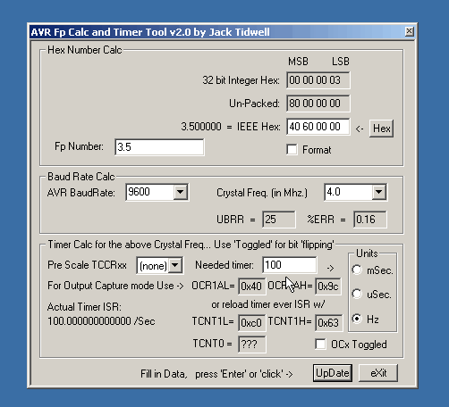

AVR Calc
AVR Calc is a cool tool for calculating values for timers and the UART. It can also convert floating point values to their hex representation. No need to tell you a lot more, just download and try it. It's available on www.avrfreaks.net in the tools section (here's a direct link).
